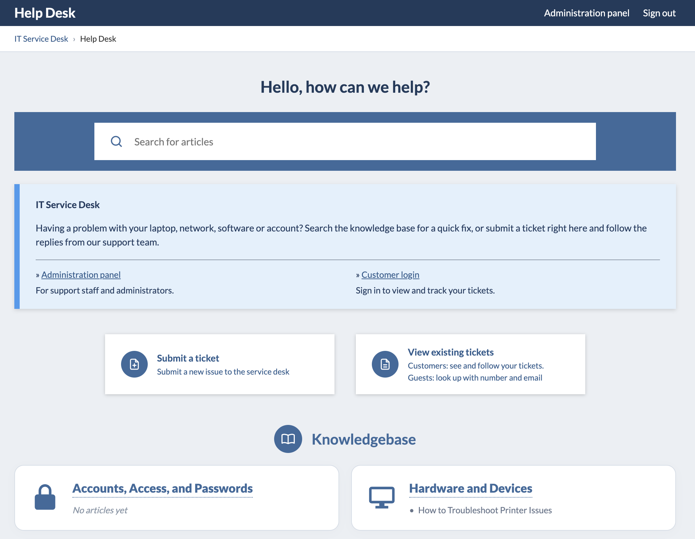
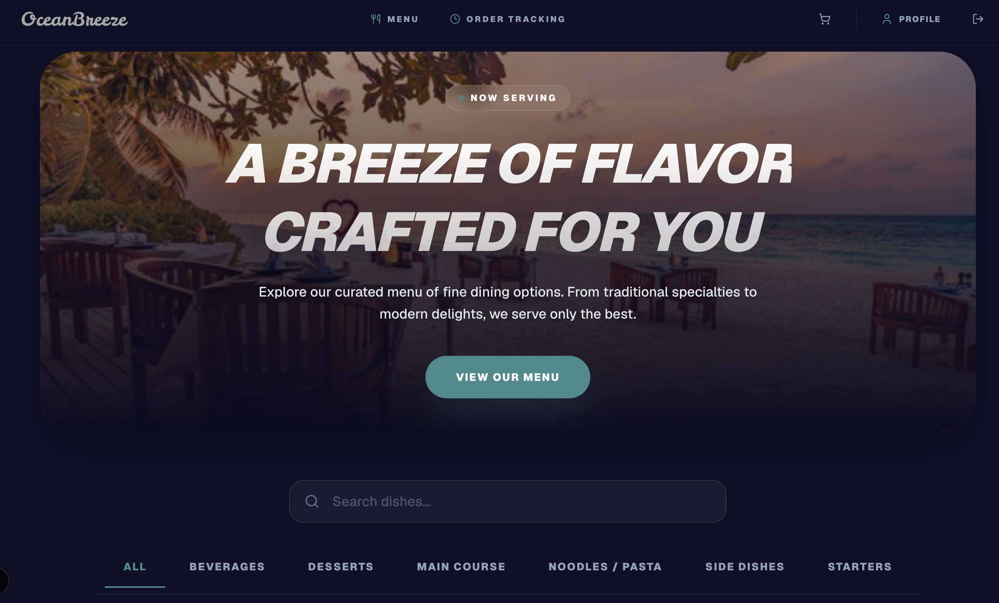
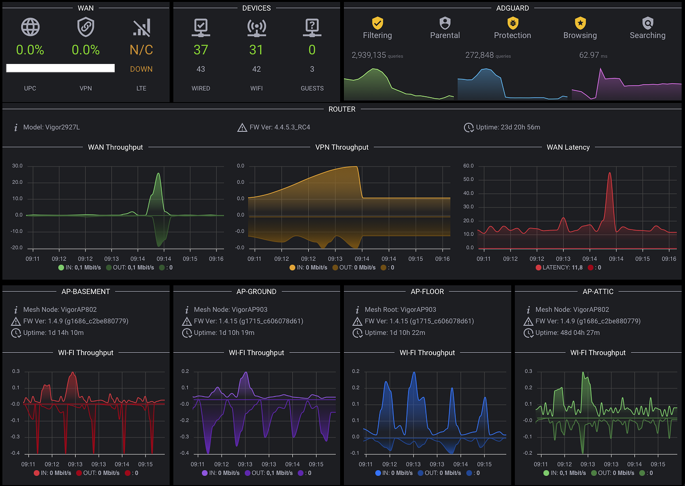
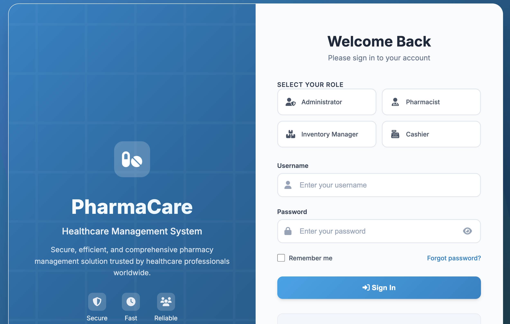

IT Support & Help Desk
Hardware and software troubleshooting, Windows and Linux fundamentals, and basic command-line problem solving.
See related work →Passionate about technology, troubleshooting and building reliable IT solutions through hands-on learning and continuous development.
Open to Internships
I am an Information Technology 3rd Year undergraduate at the Sri Lanka Institute of Information Technology (SLIIT), passionate about IT support, troubleshooting, networking and cloud technologies. I enjoy diagnosing technical problems, understanding how computer systems work and finding effective solutions. I am continuously developing my practical skills in Windows, Linux, networking and cloud technologies through hands-on learning and technical projects.
I am currently seeking an opportunity to begin my career in IT Support, Help Desk or Technical Support.
The areas I am building my skills in.
Hardware and software troubleshooting, Windows and Linux fundamentals, and basic command-line problem solving.
See related work →Networking fundamentals including TCP/IP, DNS and DHCP, with a focus on understanding how systems connect.
See my skills →AWS fundamentals, backed by the AWS Cloud Practitioner Essentials course completion certificate.
See certificate →A selection of my recent projects.
A web-based ticketing system designed for internal IT support teams. It allows users to submit support requests, track ticket status, and enables administrators to manage, prioritize, and resolve technical issues efficiently.


A lightweight, web‑based ticketing system designed for internal IT support teams. It provides a simple interface for users to submit support requests, tracks ticket status, and enables administrators to manage, prioritize, and resolve issues efficiently.

A Python-based network monitoring application that checks device connectivity using ping commands. It displays IP addresses, response times, and online/offline status through a web dashboard. It also maintains monitoring history and supports adding and removing network devices.
Built with: Python, Flask, SQLite, HTML, CSS, and JavaScript.

A web-based application designed to streamline pharmacy operations by managing medicines, inventory, prescriptions, patient information, payments, and customer loyalty programs.

Eduflow is an online O/L exam preparation platform designed to support students in their learning journey. It provides features for students, teachers and administrators to support learning activities and platform management.
Built as a full-stack application with separate frontend and backend components.
The tools and areas I work with and am continuing to develop.
WINDOWS AND LINUX FUNDAMENTALS
HARDWARE AND SOFTWARE TROUBLESHOOTING
JAVA | JAVASCRIPT | SQL
HTML | CSS | JAVASCRIPT | NODE.JS
SQL
AWS FUNDAMENTALS
TCP/IP | DNS | DHCP
BASIC COMMAND-LINE TROUBLESHOOTING
IT SUPPORT | HELP DESK | TROUBLESHOOTING
Sri Lanka Institute of Information Technology (SLIIT)
Currently studying as an Information Technology undergraduate.
AWS Training & Certification
Completed on November 14, 2026.
View CertificateCredly
View my verified digital badges and professional certifications.
View Credly Profile